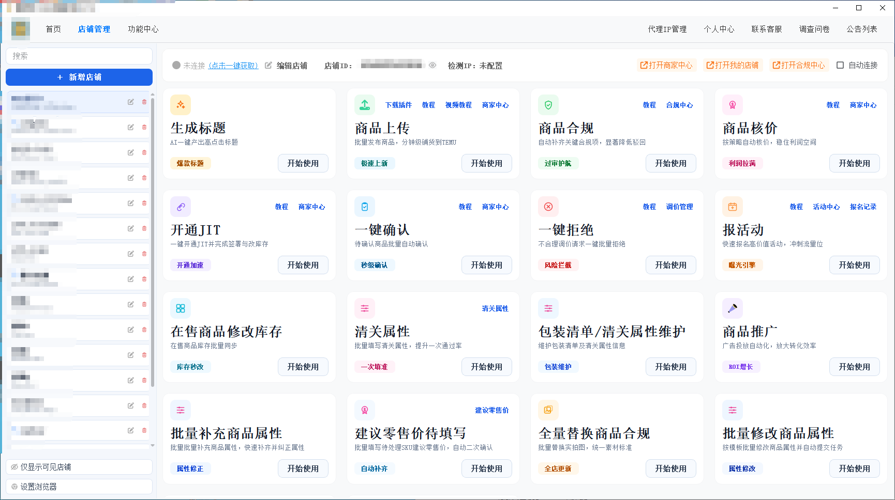

业务背景
内部流程里有商品上传、资料维护、核价、合规、上架、店铺状态等多个环节。如果长期依赖外部工具和临时表格，权限、数据、流程变化都会变得难管理。
Baodanya / Internal Business Tool
这不是图片作品展示，而是内部业务工具项目说明。它对应 SOP、自动上架、商品管理、合规核价、店铺协作等真实业务入口，目标是把外部工具和零散表格里的能力沉淀成更可控、可维护的私有化工作流。

业务背景
内部流程里有商品上传、资料维护、核价、合规、上架、店铺状态等多个环节。如果长期依赖外部工具和临时表格，权限、数据、流程变化都会变得难管理。
流程拆解
先按真实使用场景梳理入口，再拆成商品管理、SOP 执行、资料校验、状态记录、异常处理和权限维护几个稳定模块。
执行方式
把常用功能从外部工具逻辑里抽出来，结合内部数据结构和使用习惯做二改，形成更贴合团队流程的自有工具。
产出价值
降低外部工具依赖，让固定能力沉淀为可维护的内部资产，后续可围绕 SOP、上架规则、权限和数据表继续扩展。
Business Modules 业务模块
把上架流程、商品数据维护和异常检查合并成可执行链路，让人工重点转向数据准备和结果复核。
围绕商品上传、店铺信息、状态记录和分类维护，减少跨工具查找与重复录入。
把证明文件、质检信息、价格核对等固定动作纳入统一界面，降低漏填和错填风险。
按内部实际流程做功能二改和模块扩展，让工具变成可长期维护的自有资产。